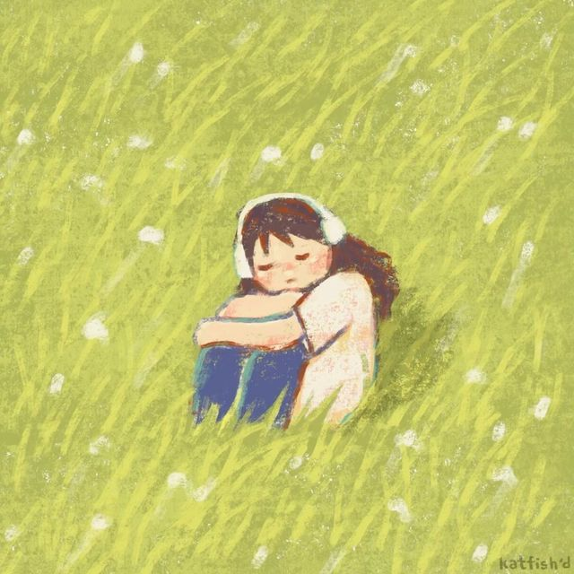
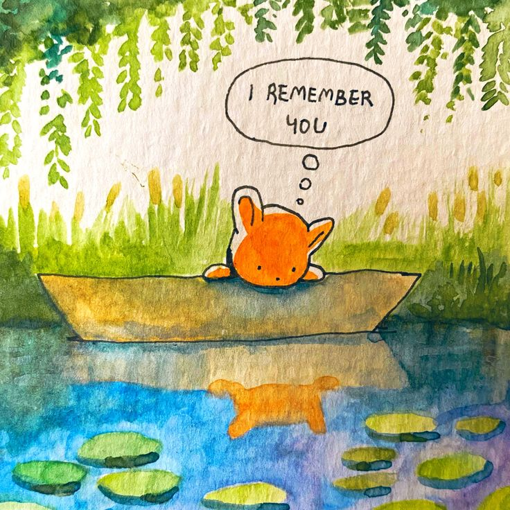

You know that moment when you’re in the middle of a screaming match with someone, and they just stop and stare at you like, “Are you okay?” Yeah, that was me, except it wasn’t a moment. It was my whole personality. 🫠 For as long as I can remember, I’ve been a certified hot-tempered chaos magnet, a one-person drama series, complete with family feuds, friend fallouts, and plenty of awkward “Did I just ruin everything?” moments.
1. Realizing Something Was Off (Finally, at 25-26)
Fast forward to my mid-20s: I was starting to notice a pattern. No, not the cute kind like polka dots or stripes! This was more like a chaotic mess of being easily overwhelmed, obsessing over tiny details (like WHY is that one tile crooked?!), and feeling like the world was an annoying, noisy roommate I didn’t sign up for.
Then one day, while scrolling down the whole internet, I stumbled upon something: autism. It was like a bunch of puzzle pieces clicked together, except the puzzle wasn’t a cute kitten! it was my entire life. 😬
2. Family Dramas 🎭
Growing up, I was “the weird one.” Not in a quirky, Zooey-Deschanel, manic-pixie-dream-girl way. More like, “Why does she refuse to hug anyone at family gatherings?” kind of weird. My parents? Oh, they thought I was just stubborn. My sibling? They alternated between mocking me and avoiding me altogether.
Every loud family dinner felt like a sensory nightmare. The shouting, the chewing noises, the sheer volume of *existing humans* I would either snap and yell, or silently pray for a meteor to hit our house. 😑
3. OH Friends!
Friendships were no easier. I was that friend who would either overshare my weird obsessions or ghost people entirely because *socializing is exhausting*. Group chats? Anxiety-inducing. Party invites? Hilarious! I'd RSVP “yes” and then fake my own death to avoid going. ☠️
Eventually, my odd habits, like needing to sit in the exact same chair at coffee shops or obsessively organizing playlists! Started to wear thin with people. “Why can’t you just chill?” they’d say. Oh, DEAR, if only you knew how much I’ve tried. 🙃
4. That crazy Urge to Be Alone
While other kids were begging to go to sleepovers, I was busy building tiny forts in my room where I could be alone with my books, my thoughts, and my totally normal obsession with cataloging math formulas! 🦉 Isolation wasn’t lonely! NOT AT ALL! it was peaceful. Still is!
As an adult, I realized I don’t just *like* being alone! I need it. Loud noises, people’s unpredictable moods, and bright lights make me feel like a computer overheating. Just can't bear! And IDC if I look weird or sth anymore! (At least most of the time.) 🖥️
5. The Weird Habits Nobody Got
Let’s talk about the quirks. Oh, the quirks. I was obsessed with super random science fields and diving into deep shit all night! The need to eat some food regularly. The random hyperfixations that consumed my every waking moment.
People didn’t understand it. Heck, I didn’t understand it. “Why can’t you just be normal?” became the recurring theme of my life.🖤
In the end, realizing I might be autistic wasn’t some magical “aha” moment that fixed everything. But it was the start of understanding myself and maybe even forgiving myself for being a little weird, a little dramatic, and a whole lot of me. 🖤